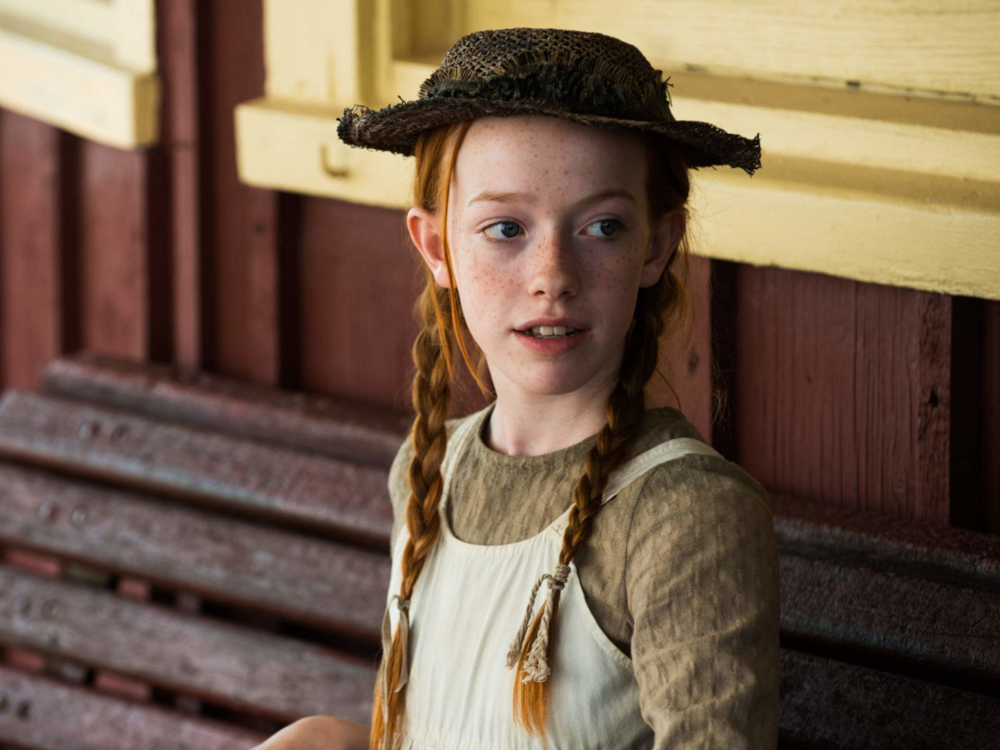

Anne with an E é uma série que acompanha a vida de Anne Shirley, uma jovem órfã que, após uma infância de abusos entre orfanatos e casas de estranhos, é enviada por engano para viver com um casal de irmãos em idade avançada. Com o passar do tempo, a pequena garota de 13 anos transforma a vida de todos com seu jeito extrovertido, sua inteligência e imaginação brilhante.